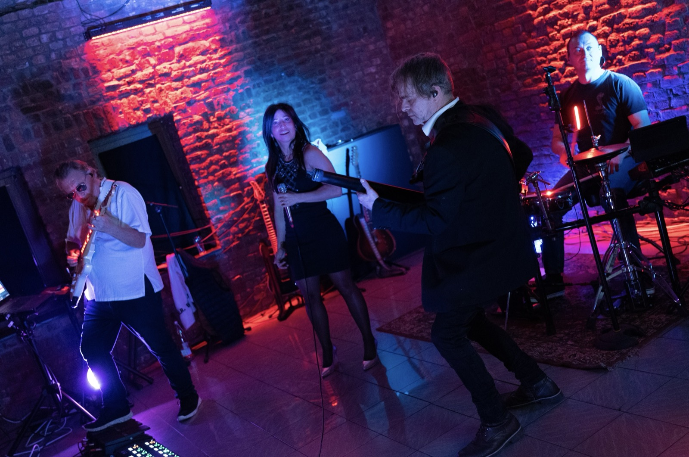

L'univers
Un projet narratif a la croisee du rock emotionnel, de la poesie et des atmospheres cinematiques.
Joe Col Joe, projet musical de Joe Col, auteur-compositeur-producteur belge, developpe un univers musical profondement narratif. Derriere le projet, Joel Collet, musicien de toujours, tisse des chansons qui racontent, qui evoquent et qui laissent une empreinte.
Entre guitare humaine et atmospheres digitales, chaque morceau devient un chapitre — un chapitre qui se lit en anglais ou en francais, au gre d'une double langue assumee.
